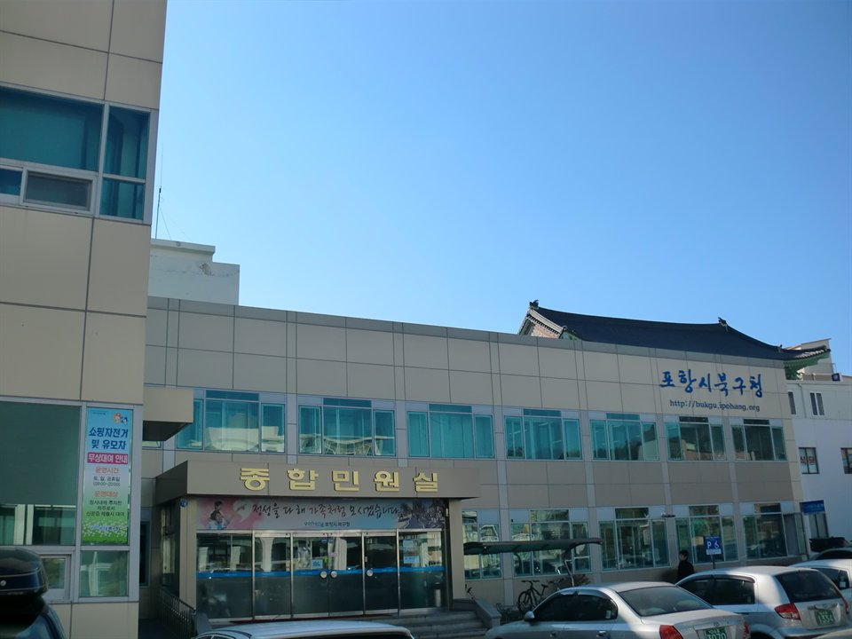

경북 포항 북구는 관리 중인 중·고등학교만 38곳입니다. 포항고등학교·포항중앙고등학교·두호고등학교·세화고등학교 같은 고등학교와 양덕중학교·창포중학교·장흥중학교가 구 안에 흩어져 있습니다. 양덕동·장성동처럼 새로 들어선 아파트 쪽과 흥해·청하 쪽은 같은 구라도 오가는 데 시간이 드는 거리라, 저녁이 학원 이동으로 통째로 묶이는 학생은 집으로 오는 1:1 영어과외나 수학과외를 따로 찾게 됩니다.
오늘은 포항 북구로 직접 찾아가는 선생님들 가운데 과목이 다른 두 분을 소개합니다. 한 분은 고등 영어를 오래 지도해 온 선생님, 한 분은 초등 고학년부터 고2까지 수학을 맡는 선생님입니다.
포항 북구에서 고등 영어과외를 찾는 이유는 대개 중학교 때 되던 방식이 고등학교에서 멈추기 때문입니다. 단어를 외우고 본문을 외우면 점수가 나왔는데, 고등학교에 오면 처음 보는 지문이 나오고 문항이 근거를 묻습니다. 이 선생님은 고등부 영어를 오래 맡아 온 분이라, 중학교식 암기에서 지문을 근거로 읽는 방식으로 넘어가는 구간을 다룹니다.
지도 범위는 초등 2학년부터 고3까지입니다. 초등·중등 단계에서는 문장 구조를 잡아 두는 쪽에, 고등 단계에서는 지문 유형별 접근에 무게를 둡니다. 수업 전후로 무엇을 했고 무엇이 남았는지 알려 주는 편이라, 집에서 진행 상황을 확인하기 쉽습니다. 방문 수업만 하는 선생님이라 수업은 학생 집에서 진행하고, 북구와 남구를 함께 방문합니다.
박ㅇ옥 선생님 상세 프로필 →포항 북구에서 중등 수학과외 상담이 들어오는 이유는 진도보다 태도인 경우가 많습니다. 문제를 못 푸는 게 아니라 앉아 있는 시간이 안 만들어지는 상태입니다. 이 선생님은 교과 진도와 함께 학습 습관을 같이 잡고, 주간 리포트로 그 주에 무엇을 했는지 정리해 보냅니다. 첫 달은 특히 촘촘하게 보는 편입니다.
지도 범위는 초등 5학년부터 고2까지입니다. 학교별 기출을 반영해 시험 기간 수업을 맞추고, 방학에는 보강을 탄력적으로 운영합니다. 수업 가능 시간이 월·수 오전 10시 이후여서, 학교 일정이 유연한 학생이나 검정고시·홈스쿨링처럼 낮 시간이 비는 경우에 맞습니다. 방문 지역은 두호동·장성동·창포동 쪽이 중심입니다.
이ㅇ수 선생님 상세 프로필 →학교마다 진도와 시험 범위가 달라서, 학교별로 준비법을 따로 정리해 두었습니다.
👉 포항 북구 영어과외 선생님 · 포항 북구 수학과외 선생님 · 포항 북구 관리 학교 전체 보기